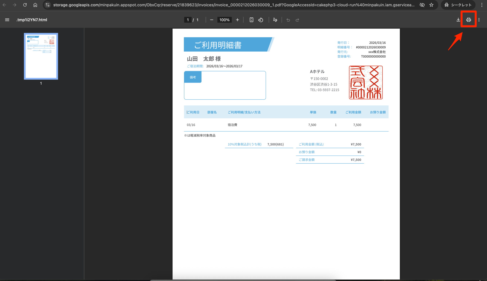

予約から領収書まで
予約・変更・会計
予約を探すところから、登録・変更・精算まで。外部予約は変更する場所を間違えないことが最重要です。
1. 予約を検索する
左メニュー → 予約管理 → 予約情報
まず上部の「スマート予約検索」を使う
- 氏名、ふりがな、電話番号、予約番号、チェックインコードのうち、確実なものを1つ入力します。
- 候補が出たら、宿泊日・人数・電話番号のいずれかを追加で照合します。
- 正しい予約の「詳細」を開きます。
検索欄の横のチェック（公式マニュアルより）スマート予約検索は、初期状態ではチェックアウトが本日以降の予約だけを探します。過去の予約を探すときは、検索欄の横の「過去分も表示」にチェックを入れます。今日出発の予約だけに絞るときは「本日チェックアウト」にチェックを入れます。一致方法は「前方一致」がおすすめです（「部分一致」だと、例えば「山田」で「山本」「田中」まで出てきます）。
スマート予約検索で探せるもの（公式マニュアルより）氏名・電話番号・チェックインコードのほか、予約経路・プラン・部屋タイプ・部屋番号・法人団体名・会社名でも探せます。お客様からのリクエスト・オペレーターメモ・リピートメモ・清掃時備考の文章も検索の対象です。氏名と電話番号は、ハイフン・スペース・カンマを省いて探します。英字の大文字と小文字、ひらがなとカタカナは区別しません。キーワードを空のままでも検索できます（あらきホテルでは未確認）。

一覧から絞り込む場合
- 「条件を選択して絞り込み」を開きます。
- チェックイン日・チェックアウト日を、探したい期間より少し広めに設定します。
- 必要な場合だけ、キャンセル状況・部屋割当状況・入室状況などの条件も選びます（「過去分も表示」「本日チェックアウト」は絞り込みパネルではなく、上部のスマート予約検索の横にあります）。
- 並べ替えを「チェックイン（昇順）」など、目的に合う順へ変更します。
- 代表者名、チェックインコード、宿泊日、部屋名、予約経路、宿泊状況を照合します。

実画面で確認した表示予約一覧には、物件名・代表者名・チェックインコード・イン／アウト・泊数・部屋名・メモ・予約経路・宿泊状況・最終更新・詳細が表示されます。
絞り込みに使える条件（公式マニュアルより）
- チェックイン・チェックアウトのほか、予約受付日（サイトコントローラーから取り込んだ日を含む）と予約更新日でも絞り込めます。
- 入室状況（仮予約／未チェックイン／宿泊中／チェックアウト済み）、リピート状況、オーバーブッキングでも絞り込めます。
- キャンセルは「キャンセルも表示する」のほか、「キャンセルのみ表示する」も選べます。
- 氏名・チェックインコード・電話番号・メールアドレス・会社名・代表者名・団体名は前方一致、OTAの予約番号は部分一致で探します。
- 並び順の初期値はチェックイン日の早い順です。最初に表示される条件（今日から1か月先までのチェックイン）は変えられません。
- 部屋番号で探したいときは、上部のスマート予約検索を使います。
| 列 | 見かた |
|---|---|
| マイページ | 押すとQRコードが出て、読み取るとそのお客様のマイページが開きます |
| メモ | リクエスト・オペレーターメモ・リピートメモがある予約にはメモのマーク、マイページで領収書を希望した予約には領収書のマークが出ます。押すと中身を確認できます |
| チェックインコード | 予約ごとに自動で振られる6桁の番号。お客様がタブレットでチェックインするときに入れます |
| 代表者名（人数） | マイページの入力を済ませた予約にはアイコンが出ます。リピーターは水色の顔のマーク、リピートの可能性がある予約は⚠マークと赤い文字で出ます（リピート判定） |
| 部屋番号 | 鍵番号が出ている予約は鍵のマーク、プランがある予約はメモのマーク（押すとプラン名）が出ます。部屋割り前は「（未部屋割り）」と出ます |
| 予定入退室時間 | 本日チェックインの予約には、オレンジの丸が付きます |
| ステータス | 押すと、マイページ・チェックインコードのメール送信状況、チェックイン状況、キャンセル状況、本予約／仮予約を確認できます。「–」は、まだメール送信やステータスの変化がない状態です |
見つからないとき氏名の漢字／カナ違い、代表者名、前後の日付、キャンセル済み、団体予約も確認します。公式マニュアルでは、次の点が案内されています。
- 絞り込み検索は、キャンセル状況を選ばないとキャンセル済みの予約を表示しません。「キャンセルも表示する」を選びます。
- 予約情報の一覧は、初期状態では「チェックインが今日から1か月先まで」に絞られています（期間は最大1年まで指定できます）。
- スマート予約検索は、初期状態では過去の予約が出ません。「過去分も表示」にチェックを入れます。
- スマート予約検索は、代表者以外の同伴者の名前やOTAの予約番号でも探せます。
開く前の確認同姓同名を避けるため、必ず「宿泊日・電話番号・人数」のいずれかも照合します。
くわしい手順はフロント運用（詳しい手順）へ：予約を探す
2. 個人予約を登録する
予約管理 → 予約情報 → 新規予約
- 「物件名」が正しいか確認します（あらきホテルには「種子島あらきホテル」と「種子島あらき別館」の2物件があります）。
- 宿泊日と泊数を入力します。
- 大人・子どもの人数、部屋タイプ、部屋数を選びます。
- 宿泊者名・ふりがな・電話番号を入力します。
- プラン、料金、支払方法を確認します。
- 特記事項があれば、誰が見ても分かる短い文で入力します。
- 内容を読み直して「保存」を1回だけ押します。

物件名の選び忘れ・選び間違い公式マニュアルでは、物件名を選ばないと保存できない（保存ボタンが出ない）とされています。別館の予約を本館で作るなど、物件の選び間違いにも注意します。
未確定の予約は「仮予約」（公式マニュアルより）まだ確定していない予約は「仮予約にする」にチェックを入れて登録できます。仮予約のあいだは自動メールが送られず、一部の帳票で集計されません。確定したらチェックを外します（くわしくはフロント運用へ。あらきホテルでは未確認）。
二重登録を防ぐ保存後に反応が遅い場合も連打しません。予約一覧で登録済みか確認してから、再操作します。
くわしい手順はフロント運用（詳しい手順）へ：2. 予約作成（個人予約）
3. 団体予約を登録する
予約管理 → 予約情報 → 新規予約 → 宿泊変更
団体予約専用の入口はありません。個人予約と同じ「新規予約」画面で、複数部屋・複数人数を設定します。
- 「代表者情報」に団体の代表者氏名と連絡先を入力します。
- 「予約情報」で宿泊日とプランなどの基本条件を入力します。
- 「宿泊変更」の「人数変更」で、部屋タイプ別の室数と各部屋の人数を設定します。
- 「金額変更」で部屋別・日別の料金を確認し、必要な場合だけ責任者ルールに沿って変更します。
- 予約時点で部屋番号まで決める場合は「部屋変更」で割り当てます。
- 「宿泊者情報」で各宿泊者と部屋の対応を確認します。
- 支払い担当・請求先・未定事項を「共有事項」に残し、予約経路と予約受付日時も確認して保存します。


個人予約との違い入口と画面は同じです。違うのは「宿泊変更」で室数・人数・料金・部屋を複数設定する点です。代表者だけ登録して終わらないようにします。
保存前に読み合わせ団体全体の宿泊日・室数・人数・料金と、各部屋の宿泊者割り当てを確認します。
くわしい手順はフロント運用（詳しい手順）へ：3. 予約作成（団体予約）
4. 予約内容を変更する
- 予約詳細で「予約経路」を確認します。
- 電話・自社予約なら、変更内容と料金差を確認してPMSで編集します。
- OTAや旅行会社経由なら、原則として予約元で変更して連携を待ちます。
- 変更後の日付・人数・部屋・料金を読み直します。
- 部屋・日程が変わった場合は清掃担当と次シフトへ共有します。

外部予約をPMSだけで変えない公式PDFでは、サイトコントローラー経由の予約は原則として予約サイト側で変更します。PMSだけを変更すると、後の自動更新で元に戻る、在庫や料金がずれる恐れがあります。公式マニュアルでは、取り込んだ予約で管理画面から変えられないのは、日時・プラン・部屋数・人数・料金・精算とされています。
自動更新停止は責任者判断予約の自動更新を止めると、それ以降の変更が連携されません。理由・対象予約・解除条件を確認できない場合は操作しません。
在庫はHOTEL SMARTからTLリンカーンへ自動で送られる公式マニュアルでは、日付を変えた場合、サイトコントローラーとの連携方式が「2way」でなければ、サイトコントローラー側で在庫の調整が必要とされています。あらきホテルはTLリンカーンと2wayで連携しているので、PMSで日程・部屋数を変えたり、予約をキャンセルしたり、部屋をブロックしたりすると、在庫はHOTEL SMARTの【販売在庫】からTLリンカーンへ自動で送られます（反映まで最長15分）。TLリンカーンの画面で残室を手で直しても上書きされるので、在庫の調整はHOTEL SMART側で責任者が行います（公式マニュアルより。くわしくはフロント運用へ、設定は初期設定編「販売在庫」）。
くわしい手順はフロント運用（詳しい手順）へ：4. 予約の変更（パターン別）
5. 料金を登録・精算する
予約詳細 → 料金・精算情報
- 宿泊料、追加料金、割引が正しいか確認します。
- 事前決済・現地決済・請求書払いなどの支払条件を確認します。
- 受け取った金額と支払方法を入力します。
- 未収金が0円になったか、または請求先が正しいか確認します。
- 画面の合計と実際の現金・カード控えを照合します。


| 表示が違う | 確認すること |
|---|---|
| 予約確認書より高い／低い | 人数・泊数・追加料金・割引・税を確認 |
| 事前決済なのに未収 | 予約経路と決済情報を確認し、重ねて請求しない |
| 現金が合わない | 金額を修正して合わせず、取引履歴と現物を責任者と照合 |
精算後の取消・返金は責任者へ正しい復旧方法が確認できるまでは、反対金額の追加や別の支払方法への付け替えを自己判断で行いません。
くわしい手順はフロント運用（詳しい手順）へ：5. 料金情報（売上）の登録／6. 精算情報の登録
未収金が残っている部屋は、【売上管理】→【滞在中精算チェックリスト】で一覧できます（くわしくはフロント運用（詳しい手順）へ）。
法人・団体の前受金を使う精算（「前受金の取り崩し」）や、後日請求にする精算（「後日決済」）、売掛金の入金登録は、フロント運用「法人・団体の前受金・売掛（後日精算）」を参照してください（公式マニュアルより）。
6. 領収書を発行する
予約詳細 → 利用明細・領収書
- 領収金額と支払い済みであることを確認します。精算を登録してから作成します（公式マニュアルでは、但し書きは領収金額があるときだけ入力できるとされています。精算前に作ると利用明細だけになります）。
- 宛名と但し書きをお客様に確認します。
- 領収書を発行し、作成されたPDFを開きます。
- 日付・宛名・金額・但し書きを確認して印刷します。



予約サイトで事前決済した分は出さない公式マニュアルでは、HOTEL SMARTで領収書を出すのは現地で支払った分で、予約サイトで事前決済した分は予約サイト側で発行してもらう、とされています。二重発行を防ぐため、事前決済分はお客様に予約サイトの領収書をご案内します（必要に応じて「領収項目に絞る」も使います）。
公式PDFの説明領収書はPDFとしてダウンロードし、内容確認後に印刷します。二重発行の場合は再発行であることが分かるよう、施設ルールに従ってください。
完了の目安画面の精算額、領収書の金額、実際の受領額が一致しています。
マイページで領収書を出すお客様（公式マニュアルより）あらきホテルはお客様マイページを使っています。マイページでの領収書発行が有効なら、お客様はチェックアウト後にマイページから自分で宛名を入れて発行できます。フロントで同じ領収書を重ねて出さないよう、発行の有無をお客様に確かめます（領収書発行の設定は、あらきホテルでは未確認。くわしくはフロント運用へ）。
くわしい手順はフロント運用（詳しい手順）へ：7. 利用明細・領収書の発行